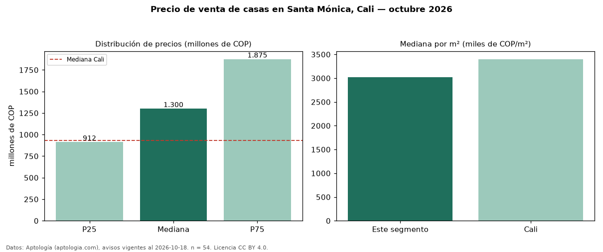

Precio de venta de casas en Santa Mónica, Cali — octubre 2026
En Santa Mónica, Cali, la mediana de precio de venta de casas es COP 1,30 mil millones, según 54 avisos vigentes. Eso es 40 % por encima de la mediana de Cali para casas (COP 930 millones). Por metro cuadrado, la mediana es COP 3,02 millones/m² (n = 53 avisos con área), 11 % por debajo de Cali (COP 3,40 millones/m²). El área mediana anunciada es 382 m². El segmento con más oferta es el de 3 o más habitaciones (51 avisos, mediana COP 1,30 mil millones). La mitad central de los avisos va de COP 912 millones a COP 1,88 mil millones (razón 2,1), una dispersión alta. Por precio mediano es el puesto 7 de 32 barrios de Cali con al menos 30 avisos de casas en venta (COP): en la franja media. El estrato más frecuente es 5 (57 % de los avisos con estrato). Datos: Aptología (aptologia.com), CC BY 4.0 — https://www.aptologia.com/casas-en-venta/cali/santa-monica. Archivos: PDF, CSV con las cifras y gráfica PNG.

| Avisos únicos | 54 |
|---|---|
| Percentil 25 | COP 912.500.000 |
| Mediana | COP 1.300.000.000 |
| Percentil 75 | COP 1.875.000.000 |
| Mediana por m² | COP 3.024.574 |
Fuente: avisos vigentes de portales inmobiliarios recopilados por Aptología, deduplicados (mínimo 30 avisos únicos por celda). Precios pedidos, no cerrados. Fecha: 2026-10-18.